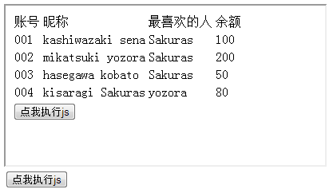
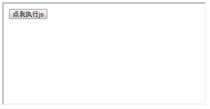

通过前面两节的介绍的知识点，我们已经能够无压力访问到文档内任意一个节点了。但那是在没有框架结构的前提下。
目前frame，iframe结构（以下称框架）被广泛应用于互联网网站。他们本身就相当于一个页面，有自己的文档树，因此，框架内的内容无法由外层的文档树获取。我们要寻找框架内的元素，必须先取到该框架的文档树，然后再利用上前面介绍的方法才行。
例6：有如下页面，里面的iframe嵌套了例5中的页面。要求执行test()后能够模拟点击iframe内的按钮，从而实现加萌萌的边框的效果。

HTMLExample6/HTMLExample6.html
解释：本例介绍使用contentDocument获取框架内文档节点的方法。
步骤：
HTMLExample6/HTMLExample6.html
第4行，找到iframe元素节点后，通过contentDocument属性获取内部的文档节点。
第5行，找到input元素，模拟点击。
该例在Chrome下测试不通过，但是其他浏览器OK。
原来，js访问框架内的内容，需要同源框架才行（协议名，域名，端口号一致）。Chrome比较变态，认为俩个本地页面也属于跨域，我对此很无语。
关于跨域frame的js访问问题，这里就不展开讨论了。想要了解详情的童鞋可以看本站的源码（苦逼的我为了兼容Chrome，本站的几个iframe都是当做跨域来处理的）。
哦，提醒一下，模拟点击时请用click（），不要忘了后面的括号哦。
例7：有如下页面，要求填写iframe里的test函数体，使得执行后能改变该iframe的border为none，改变background-color为blue。

HTMLExample7/HTMLExample7.html
下面是iframe的源码。
HTMLExample7/iframe.html
解释：本例介绍利用parent属性获取上层框架文档节点的办法。
步骤：
HTMLExample7/iframe.html
第4行，parent属性获取父窗口，document属性获取相应的文档节点。
第5行，简单的设置一下内联css。
说到这里，需要讲一下，parent究竟是谁的属性？为咩直接写了就可以用？还有document为咩直接出来就是当前的文档节点？
其实，在javascript代码中，有window这样一个全局对象（代表着当前窗口），所有的表达式都是在这个环境中工作的。
例如直接写alert，其实就是window.alert。alert不过是window对象的一个方法而已。
相应的，document和parent都是window的属性，返回相应的文档节点和父窗口。
大家要注意区分，文档节点，窗口和iframe元素这几个概念。
好啦，这一节就到这里，我们来总结一下：